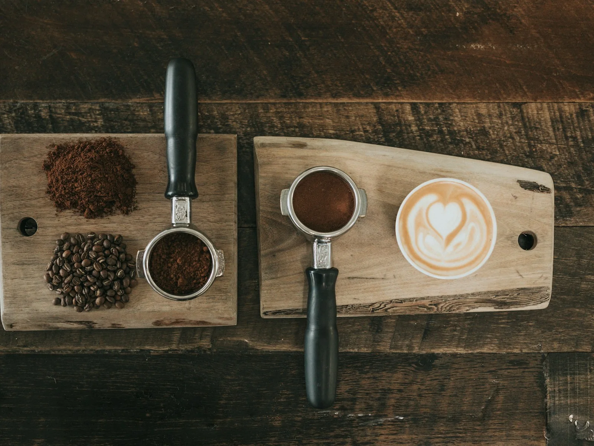

Bread
Country Sourdough
Naturally leavened · crisp crust · open crumb
8.50
FULL CATALOG
Sample products and pricing for this prototype. Verify final recipes, allergens, availability and prices before launch.
Bread
Naturally leavened · crisp crust · open crumb

Bread
Rye flour · toasted seeds · deep fermentation
Bread
Thin crust · airy interior · baked throughout the morning
Bread
Country dough · green olives · herbs
Bread
Olive oil · rosemary · flaky salt
Bread
Soft pullman loaf · lightly enriched
Bread
Whole wheat · seeds · long fermentation
Bread
Toasted walnuts · raisins · sourdough base

Pastry
Classic laminated pastry · cultured butter
Pastry
Laminated dough · dark chocolate batons
Pastry
Almond cream · toasted almonds · powdered sugar
Pastry
Cinnamon · orange sugar · laminated dough
Pastry
Caramelized laminated pastry · sea salt
Pastry
Smoked ham · alpine cheese · butter croissant
Pastry
Seasonal berries · pastry cream · laminated dough
Pastry
Rotating fruit · pastry cream · glaze

Cookies & Bars
Brown butter · dark chocolate · flaky salt
Cookies & Bars
Oats · raisins · cinnamon
Cookies & Bars
Dark chocolate · espresso · fudgy center
Cookies & Bars
Brown butter · vanilla · caramelized edges
Cookies & Bars
Butter · vanilla · crisp crumb
Cookies & Bars
Rotating fruit, chocolate or nut filling

Cakes
Vanilla layers · vanilla buttercream · simple finish

Cakes
Chocolate cake · ganache · chocolate buttercream
Cakes
Carrot · warm spice · cream cheese frosting
Cakes
Lemon cake · berry filling · vanilla buttercream
Cakes
Cocoa cake · cream cheese frosting
Cakes
Espresso soak · mascarpone cream · cocoa
Cakes
Serves a crowd · custom message included
Cakes
Consultation required · custom design and serving size

Savory
Egg · cheese · house roll · rotating add-ons
Savory
Buttery crust · rotating vegetable or cheese filling
Savory
House focaccia · seasonal fillings
Savory
Flaky pastry · rotating savory filling
Savory
Rotating soup · slice of house bread

Coffee
Double shot
Coffee
Espresso · hot water
Coffee
Espresso · steamed milk · foam
Coffee
Espresso · steamed milk
Coffee
Espresso · chocolate · steamed milk

Coffee
Slow-steeped coffee · served cold
Boxes & Catering
Six assorted morning pastries
Boxes & Catering
Twelve assorted morning pastries
Boxes & Catering
Twelve assorted cookies
Boxes & Catering
Pastries · fruit · coffee setup for small groups
Boxes & Catering
Cookies · bars · small sweets

Boxes & Catering
Serves approximately 8–10 cups · cups included